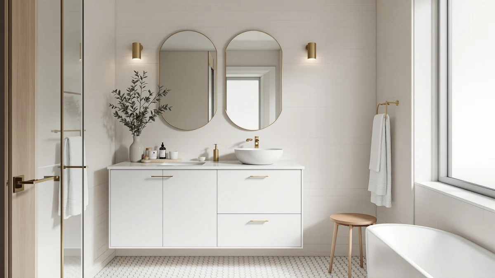

Best Bathroom Vanities for the Money (2026)
Prices and picks verified as of August 2026. Independent, reader-supported reviews.


Quick Answer
The best bathroom vanities for the money in this comparison range from a $239.99 farmhouse vanity with a sink included to a $1,522.99 double-sink floating design. Our pick, the WindBay 30-Inch Wall Mount Floating Vanity, balances a 4.5-star rating across 200 verified reviews with a mid-range $529.00 price. If you want to spend less, the LUXOAK, AMERLIFE, and VINGLI farmhouse vanities all land near $239.99 with the sink already installed.
Our pick: WindBay 30" Wall Mount Floating, $529.00 Check Price on Amazon
Bottom line: our top pick is the WindBay 30" Wall Mount Floating Vanity Dark Grey at $529. The best budget option is the Blossom 48" Double Sink Floating Vanity Glossy White at $1.
Things to Know Before You Buy
- Price in this guide spans from $239.00 to $1,522.99. Four vanities cluster near $239.99 (LUXOAK, AMERLIFE, Beingnext, and VINGLI), while the WindBay pair and the Blossom sit well above that, so your budget narrows the field fast.
- Every vanity here is MDF or engineered wood. None of the seven use solid hardwood construction, so the price differences reflect size, finish, and hardware rather than a jump in base material.
- Not every vanity includes a sink. The farmhouse picks from LUXOAK, AMERLIFE, and VINGLI ship with a sink installed, while the WindBay and Beingnext floating vanities and the Blossom are sold as the cabinet itself, so check each listing before you budget for extras.
- Floating vanities cost more per inch of width. The WindBay 30-inch and 36-inch models and the Blossom 48-inch double sink all wall-mount, and that hardware and design premium is part of why they price above the farmhouse cabinets in this guide.
- Review volume varies widely. The LUXOAK has 252 verified reviews, the most in this guide, while the Blossom has only 50, worth factoring in alongside star rating when you judge the best bathroom vanities for the money.
The best bathroom vanities for the money don't always carry the lowest price tag on the page. They carry the lowest cost per year of use once you weigh material, size, and verified owner ratings against what you paid. We compared seven vanities ranging from $239.00 to $1,522.99, spanning compact 22-inch floating cabinets to a 48-inch double-sink design, to see which ones deliver the most bathroom for your budget.
Our pick for the best bathroom vanities for the money is the WindBay 30-Inch Wall Mount Floating Vanity. At $529.00, it lands in the middle of this guide's price range, and it earns that position with a 4.5-star rating across 200 verified reviews, the strongest combination of rating and review volume in this comparison. Its wall-mounted design frees up floor space for cleaning and works in bathrooms where a traditional floor-standing cabinet would crowd the room.
If $529.00 is more than you want to spend, the farmhouse-style picks from LUXOAK, AMERLIFE, and VINGLI all land near $239.99 and each ship with a sink already installed. If you need more counter and storage space for two people getting ready at once, the Blossom 48-Inch Double Sink Floating Vanity is the only double-sink option in this guide, though its $1,522.99 price reflects that extra capacity.
Why You Should Trust Us
Best Bathroom Vanities covers vanity cabinets, vanity tops, and sinks for a US audience shopping online for bathroom fixtures. Ilane Tall has spent years comparing RTA and pre-assembled vanities across price tiers, tracking how listed dimensions and materials translate into real bathroom space. For this guide on the best bathroom vanities for the money, we pulled pricing, ratings, and review counts directly from each listing, checked what's included at each price point, and compared verified owner feedback across all seven vanities. We don't run a paid testing lab and we don't invent expert quotes. We read the same listings you can, compare the numbers, and tell you where your money buys more vanity and where it pays for a wall-mount design premium instead.
How We Picked
We started by setting a wide price range, from $239.00 to $1,522.99, so the best bathroom vanities for the money in this guide would represent different budgets rather than cluster at one price point. From there we required a minimum of 50 verified reviews per vanity, a threshold every product here clears, with the LUXOAK topping the group at 252. We also grouped the vanities by design so comparisons stay apples to apples: two WindBay wall-mount floating vanities in matching dark grey at two widths, three farmhouse-style vanities with sliding barn doors near $239.99, one compact floating vanity for small bathrooms, and one double-sink floating vanity for larger spaces. We excluded any listing where rating or review data wasn't available, since a price comparison without owner feedback behind it isn't useful for a buying decision.
How We Compared
Comparing bathroom vanities before they ship to your house means comparing the numbers on the listing, not a finished vanity in a showroom. For each product, we checked price against what ships in the box, sink included or cabinet only, to confirm the comparison across this guide's four price clusters stays fair. We compared star rating against review count, since a 4.5-star rating built on 200 reviews (the WindBay 30-inch) tells you more than the same rating built on 50 (the Blossom). We also checked stated dimensions and material against the specification each brand lists, MDF and engineered wood across all seven, so that size and finish, rather than a hidden material downgrade, account for the price gap between the cheapest and priciest picks in this guide to the best bathroom vanities for the money.
Our Picks

WindBay 30" Wall Mount Floating
What we like
- At 4.5 stars across 200 verified reviews, it has the strongest rating-to-review-count combination of any vanity in this guide
- The wall-mount floating design clears the floor beneath the cabinet, which makes cleaning easier and can visually open up a small bathroom
- Dark grey finish reads as a neutral, modern choice that doesn't lock you into one bathroom style
- At $529.00, it sits below the WindBay 36-inch and well below the Blossom double sink, so you get the floating design without the highest price in this guide
Flaws but not dealbreakers
- At $529.00, it costs more than double any of the three farmhouse picks in this guide
- Floating vanities need wall blocking rated for the cabinet's weight, so installation is less straightforward than a floor-standing cabinet
- Sink and faucet aren't confirmed as included in the base listing, so budget for those separately if needed
| Material | MDF / engineered wood |
| Size | — |
The WindBay 30-Inch Wall Mount Floating Vanity is the best bathroom vanity for the money in this guide when you weigh rating against review volume. Its 4.5-star rating is matched only by the Blossom double-sink vanity, but the WindBay backs that rating with 200 verified reviews against the Blossom's 50, a four-times-larger sample size behind the same score.
At $529.00, it sits in the middle of this guide's price range, above the $239.99 farmhouse cabinets but well below the $1,522.99 Blossom double sink. The dark grey finish and wall-mount design give it a more contemporary look than the farmhouse barn-door picks, and floating installation frees up visible floor space, a real advantage in a compact bathroom where every inch of sightline matters.

Blossom 48" Double Sink Floating
What we like
- The only double-sink design in this comparison, at 48 inches wide it gives two people separate counter and sink space
- Matches the WindBay pair's 4.5-star rating, the highest in this guide
- Glossy white finish and floating installation keep a large 48-inch footprint from visually overwhelming the room
- Floating design clears the floor beneath the cabinet, the same cleaning and space advantage as the WindBay vanities
Flaws but not dealbreakers
- At $1,522.99, it costs nearly three times the WindBay 36-inch and more than six times the farmhouse picks in this guide
- Only 50 verified reviews back its 4.5-star rating, a quarter of the WindBay 30-inch's review count behind the same score
- A 48-inch double-sink cabinet needs more wall space and stronger blocking than any single-sink pick here
| Material | MDF / engineered wood |
| Size | — |
The Blossom 48-Inch Double Sink Floating Vanity is the only two-sink option in this guide, and at $1,522.99 it's also the most expensive by a wide margin. That price buys 48 inches of counter and cabinet space split across two sinks, a layout none of the other six single-sink vanities here can offer.
Its 4.5-star rating ties the WindBay 30-inch for the highest in this comparison, though only 50 verified reviews back it against the WindBay's 200. If two people share this bathroom every morning, the double-sink layout may be worth the premium; if not, a single-sink floating vanity like the WindBay pair delivers a similar look and rating at a fraction of the cost.

WindBay 36" Wall Mount Floating
What we like
- Same dark grey finish and wall-mount floating design as our top pick, at 36 inches instead of 30
- 4.4-star rating across 150 verified reviews, the second-strongest rating and review combination in this guide
- The extra 6 inches of width over the 30-inch model adds counter space without stepping up to the Blossom's 48-inch double sink
- Floating installation keeps the floor beneath the cabinet clear, the same practical benefit as the smaller WindBay
Flaws but not dealbreakers
- At $599.00, it costs $70 more than the WindBay 30-inch for the same finish and design in a wider size
- Its 4.4-star rating trails the 30-inch model's 4.5 stars, though the difference is small
- Like the 30-inch WindBay, it needs wall blocking rated for a floating cabinet, which adds an installation step a floor-standing vanity skips
| Material | MDF / engineered wood |
| Size | — |
The WindBay 36-Inch Wall Mount Floating Vanity shares its dark grey finish and floating design with our top pick, scaled up to 36 inches wide. At $599.00, it costs $70 more than the 30-inch version, a reasonable premium for 6 additional inches of counter and cabinet space.
Its 4.4-star rating across 150 verified reviews sits behind the 30-inch model's 4.5 stars and 200 reviews by a narrow margin, close enough that the choice between the two comes down to how much width your bathroom can accommodate rather than a meaningful quality gap.

LUXOAK 31" Farmhouse Sliding Barn
What we like
- At 252 verified reviews, it has the largest review sample of any vanity in this guide, more than the WindBay 30-inch's 200
- Ships with a sink installed, unlike the WindBay floating vanities and the Blossom, which are sold as the cabinet
- At $239.99, it costs less than half of the WindBay 30-inch and roughly a sixth of the Blossom double sink
- The sliding barn door in distressed white gives it a farmhouse look distinct from the WindBay pair's modern floating design
Flaws but not dealbreakers
- At 4.3 stars, its rating trails the WindBay pair and the Blossom by 0.1 to 0.2 stars
- At 31 inches, it's narrower than either WindBay model, so counter space is more limited
- A sliding barn door needs clear wall space beside the cabinet to operate, which a hinged-door vanity doesn't require
| Material | MDF / engineered wood |
| Size | 31 inch |
The LUXOAK 31-Inch Farmhouse Sliding Barn Door Vanity carries the largest review count in this guide at 252 verified reviews, ahead of every other pick including the WindBay 30-inch's 200. At $239.99, it's also tied for the least expensive vanity here, and unlike the WindBay and Blossom floating vanities, it ships with a sink already installed.
Its 4.3-star rating sits a few tenths behind the WindBay and Blossom picks, a reasonable trade-off given the price gap. The distressed white finish and sliding barn door give it a farmhouse look that the WindBay pair's dark grey floating design doesn't attempt to match, so the choice between them is as much about style as budget.

AMERLIFE 31" Farmhouse Bathroom Vanity
What we like
- Matches the LUXOAK's $239.99 price and 31-inch farmhouse layout with a sink included
- 4.3-star rating across 178 verified reviews, a solid sample size even though it trails the LUXOAK's 252
- Antique white finish reads warmer and less distressed than the LUXOAK's weathered look, a distinct style option at the same price
- Sliding barn door design keeps the farmhouse aesthetic consistent with the other budget picks in this guide
Flaws but not dealbreakers
- Its 178 verified reviews trail the LUXOAK's 252, though both land well above the Blossom's 50
- At 31 inches wide, it offers the same limited counter space as the LUXOAK, well short of the WindBay or Blossom
- Like the other barn-door picks, it needs open wall space beside the cabinet for the door to slide
| Material | MDF / engineered wood |
| Size | 31 inch |
The AMERLIFE 31-Inch Farmhouse Bathroom Vanity is priced identically to the LUXOAK at $239.99 and shares the same 31-inch footprint and included sink. The main difference is finish: antique white here against distressed white on the LUXOAK, so the choice comes down to which look fits your bathroom rather than price or size.
Its 4.3-star rating matches the LUXOAK exactly, though its 178 verified reviews fall short of the LUXOAK's 252. Both numbers are well ahead of the Blossom's 50 reviews, so either farmhouse pick gives you a larger feedback sample than the priciest vanity in this guide, at a fraction of the cost.

Beingnext 22" Small Floating Vanity
What we like
- At 22 inches wide, it's the narrowest vanity in this guide by 8 inches, fitting spaces none of the other six picks would clear
- At $239.00, it's priced within a dollar of the farmhouse picks despite the floating design and small-space engineering
- Floating installation clears the floor beneath the cabinet, the same cleaning advantage as the larger WindBay models
- White finish is a neutral choice that works in a small bathroom without visually shrinking the space further
Flaws but not dealbreakers
- At 80 verified reviews, its sample size is smaller than every pick here except the Blossom's 50
- At 22 inches, counter space is limited to what a compact single-sink layout allows, well short of the WindBay or Blossom
- Like the other floating vanities in this guide, it needs wall blocking rated for the cabinet's weight
| Material | MDF / engineered wood |
| Size | — |
The Beingnext 22-Inch Small Floating Vanity is the narrowest cabinet in this comparison, 8 inches slimmer than the next-smallest pick, the 30-inch VINGLI. That narrow footprint makes it the only realistic option in this guide for a small bathroom or powder room where a 30-inch or wider vanity won't clear the doorway or fixtures.
At $239.00, it costs about the same as the farmhouse picks despite its floating design, which normally carries a premium in this guide, as the WindBay pair shows. Its 4.3-star rating matches the LUXOAK and AMERLIFE, though its 80 verified reviews is a smaller sample than either of those two.

VINGLI 30" Farmhouse Bathroom Vanity
What we like
- Includes an open shelf below the cabinet, a storage feature the LUXOAK and AMERLIFE farmhouse picks don't list
- At $239.99, it matches the price of the other farmhouse vanities in this guide with a sink included
- Washed gray finish gives it a third distinct farmhouse color option alongside the LUXOAK's distressed white and AMERLIFE's antique white
- 128 verified reviews is a solid sample, more than the Beingnext or Blossom in this guide
Flaws but not dealbreakers
- At 4.2 stars, it has the lowest rating of any vanity in this guide, a tenth of a star behind the LUXOAK and AMERLIFE
- Its 128 verified reviews trail both the LUXOAK's 252 and the AMERLIFE's 178
- At 30 inches, it offers slightly less width than the 31-inch LUXOAK and AMERLIFE despite the same price
| Material | MDF / engineered wood |
| Size | 30 inch |
The VINGLI 30-Inch Farmhouse Bathroom Vanity matches the LUXOAK and AMERLIFE on price at $239.99 and adds an open shelf beneath the cabinet, a feature neither of those two farmhouse picks includes. The washed gray finish also gives shoppers a third farmhouse color option beyond distressed white and antique white.
Its 4.2-star rating is the lowest in this guide, though the gap to the LUXOAK and AMERLIFE's 4.3 stars is a single tenth of a point. With 128 verified reviews, it has a smaller sample than either of those two farmhouse picks but a larger one than the Beingnext or Blossom, making it a reasonable choice if the built-in shelf matters more to you than shaving a fraction off the rating.
Quick Comparison
| Product | Material | Price | Rating | Best for | Get it |
|---|---|---|---|---|---|
| WindBay 30" Wall Mount Floating | MDF / engineered wood | $529.00 | 4.5 | Best floating vanity for the money | View on Amazon → |
| Blossom 48" Double Sink Floating | MDF / engineered wood | $1,522.99 | 4.5 | Best for double-sink bathrooms | View on Amazon → |
| WindBay 36" Wall Mount Floating | MDF / engineered wood | $599.00 | 4.4 | Best for extra counter width | View on Amazon → |
| LUXOAK 31" Farmhouse Sliding Barn | MDF / engineered wood | $239.99 | 4.3 | Best budget farmhouse pick | View on Amazon → |
| AMERLIFE 31" Farmhouse Bathroom Vanity | MDF / engineered wood | $239.99 | 4.3 | Best antique white farmhouse pick | View on Amazon → |
| Beingnext 22" Small Floating Vanity | MDF / engineered wood | $239.00 | 4.3 | Best for small bathrooms | View on Amazon → |
| VINGLI 30" Farmhouse Bathroom Vanity | MDF / engineered wood | $239.99 | 4.2 | Best farmhouse pick with a shelf | View on Amazon → |
What is the best bathroom vanity for the money in this guide?
Among the seven best bathroom vanities for the money we compared, the WindBay 30-Inch Wall Mount Floating Vanity offers the strongest combination of rating and review volume, a 4.5-star average across 200 verified reviews at $529.00.
Do budget farmhouse vanities include the sink?
In this guide, yes.
The Competition
The two WindBay vanities compete directly against each other, since both share the same dark grey finish and floating design. The 30-inch model costs $70 less and edges out the 36-inch in rating, 4.5 stars against 4.4, though its 200 reviews against 150 for the 36-inch keep both in a similar confidence range. Choose between them based on how much wall space your bathroom has rather than any real gap in value for the money.
The three farmhouse vanities, the LUXOAK, AMERLIFE, and VINGLI, all price at $239.99 and share a sliding barn door design, which makes finish and small feature differences the real deciding factor. The LUXOAK's 252 reviews and 4.3-star rating lead the group, the AMERLIFE nearly matches it at 4.3 stars with 178 reviews, and the VINGLI trails both at 4.2 stars but adds an open shelf the other two don't list.
The Beingnext 22-inch stands apart from the rest of this guide on size alone. At 22 inches, it's narrower than every other pick by at least 8 inches, so it isn't competing with the WindBay or farmhouse vanities for the same bathroom footprint. It's the option for a space too small for any of them.
The Blossom 48-inch double sink is the outlier on price at $1,522.99, more than double the next most expensive pick, the WindBay 36-inch. It only makes sense against the rest of this lineup if your bathroom needs two separate sinks, since a single-sink WindBay delivers a similar rating and floating design for a fraction of the cost.
Frequently Asked Questions
What is the best bathroom vanity for the money in this guide?
Among the seven best bathroom vanities for the money we compared, the WindBay 30-Inch Wall Mount Floating Vanity offers the strongest combination of rating and review volume, a 4.5-star average across 200 verified reviews at $529.00. If you want a lower price, the LUXOAK, AMERLIFE, and VINGLI farmhouse vanities all land near $239.99 with a sink included.
Do budget farmhouse vanities include the sink?
In this guide, yes. The LUXOAK, AMERLIFE, and VINGLI farmhouse vanities, all priced at $239.99, ship with a sink installed. The WindBay floating vanities and the Blossom double-sink vanity are listed as the cabinet, so confirm what's included before you budget for a matching sink and faucet.
Are floating bathroom vanities worth the extra cost?
It depends on your bathroom and budget. The floating vanities in this guide, the WindBay pair and the Blossom double sink, price from $529.00 to $1,522.99, well above the $239.99 farmhouse picks. That premium buys a floor-clearing design that can make a small bathroom feel more open and easier to clean underneath, but it isn't necessary if floor space or a farmhouse look isn't a priority.